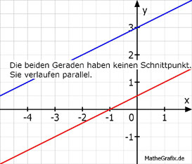

Lineare Gleichungssysteme Aufgabe 65 Bestimmen Sie den Schnittpunkt der Geraden. 2,6y - 1,3x = 1,3 (1) 0,8y - 0,4x = 2,4 (2) (1) nach y umgestellt 2,6y - 1,3x = 1,3 |+1,3x 2,6y = 1,3x + 1,3 | :2,6 y = 0,5x + 0,5 (2) nach y umgestellt 0,8y - 0,4x = 2,4 |+0,4x 0,8y = 0,4x + 2,4 | :0,8 y = 0,5x + 3 y = y 0,5x + 0,5 = 0,5x + 3 |-0,5x 0,5 = 3 Widerspruch. Die beiden Geraden haben dieselbe Steigung. Sie verlaufen parallel und haben deswegen keinen Schnittpunkt. 